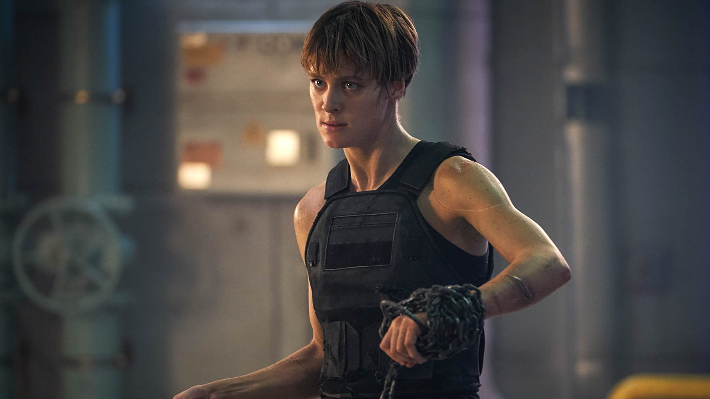

hypertext markup Language (HTML) is the standard markup Language for creating web pages and web applications.
Mackenzie Davis (born April 1, 1987)[3] is a Canadian actress. 
She made her feature film debut in Smashed, and later appeared in Breathe In, That Awkward Moment, The Martian, Blade Runner 2049, and The F Word, receiving a Canadian Screen Award nomination for the latter. From 2014 to 2017, she starred as computer programmer Cameron Howe in the television series Halt and Catch Fire.[4] She also co-starred in the "San Junipero" episode of the television series Black Mirror. In 2019, she starred as the augmented super-soldier Grace in Terminator: Dark Fate.